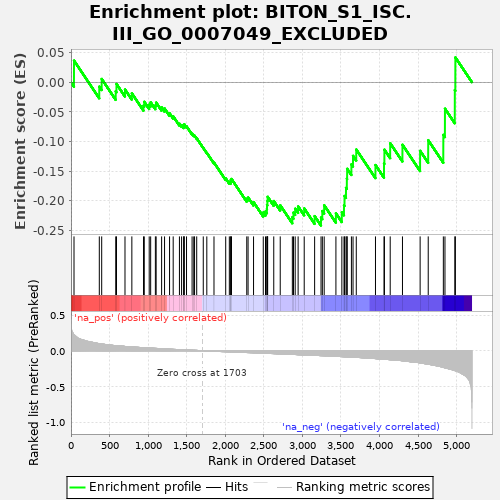
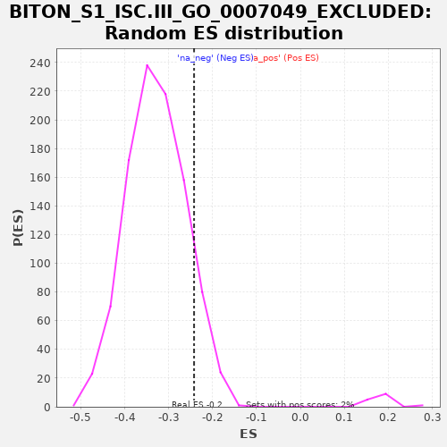

| | | Dataset | al5_v_al2 |
| Phenotype | NoPhenotypeAvailable |
| Upregulated in class | na_neg |
| GeneSet | BITON_S1_ISC.III_GO_0007049_EXCLUDED |
| Enrichment Score (ES) | -0.24217151 |
| Normalized Enrichment Score (NES) | -0.7380836 |
| Nominal p-value | 0.8994924 |
| FDR q-value | 0.89071196 |
| FWER p-Value | 1.0 |
Table: GSEA Results Summary

Fig 1: Enrichment plot: BITON_S1_ISC.III_GO_0007049_EXCLUDED
Profile of the Running ES Score & Positions of GeneSet Members on the Rank Ordered List
| PROBE | GENE SYMBOL | GENE_TITLE | RANK IN GENE LIST | RANK METRIC SCORE | RUNNING ES | CORE ENRICHMENT | | 1 | Brd8 | | | 39 | 0.220 | 0.0367 | No |
| 2 | Ubap2 | | | 367 | 0.098 | -0.0074 | No |
| 3 | Tex10 | | | 398 | 0.094 | 0.0056 | No |
| 4 | Lrrc45 | | | 580 | 0.071 | -0.0153 | No |
| 5 | Ino80e | | | 590 | 0.070 | -0.0029 | No |
| 6 | Nsmce4a | | | 700 | 0.060 | -0.0122 | No |
| 7 | Rpap1 | | | 789 | 0.053 | -0.0187 | No |
| 8 | Hnrnpul1 | | | 940 | 0.042 | -0.0395 | No |
| 9 | Pck2 | | | 950 | 0.041 | -0.0330 | No |
| 10 | Fbln1 | | | 1014 | 0.038 | -0.0377 | No |
| 11 | Rsrc1 | | | 1033 | 0.036 | -0.0339 | No |
| 12 | Slc9a8 | | | 1094 | 0.033 | -0.0390 | No |
| 13 | Lsm2 | | | 1104 | 0.032 | -0.0343 | No |
| 14 | Hmgb2 | | | 1175 | 0.028 | -0.0423 | No |
| 15 | Ilf3 | | | 1213 | 0.026 | -0.0443 | No |
| 16 | Parp2 | | | 1278 | 0.022 | -0.0524 | No |
| 17 | Srrt | | | 1325 | 0.019 | -0.0576 | No |
| 18 | Xrcc1 | | | 1406 | 0.016 | -0.0700 | No |
| 19 | Hist1h1e | | | 1434 | 0.014 | -0.0724 | No |
| 20 | Suz12 | | | 1461 | 0.013 | -0.0749 | No |
| 21 | Ccdc77 | | | 1465 | 0.012 | -0.0730 | No |
| 22 | Tcof1 | | | 1468 | 0.012 | -0.0709 | No |
| 23 | Ccdc34 | | | 1498 | 0.011 | -0.0745 | No |
| 24 | Dnajc9 | | | 1570 | 0.008 | -0.0868 | No |
| 25 | Slc20a2 | | | 1592 | 0.006 | -0.0897 | No |
| 26 | Pold1 | | | 1602 | 0.006 | -0.0903 | No |
| 27 | Ssrp1 | | | 1630 | 0.004 | -0.0947 | No |
| 28 | Bckdk | | | 1715 | -0.000 | -0.1110 | No |
| 29 | Cmss1 | | | 1761 | -0.003 | -0.1192 | No |
| 30 | U2af2 | | | 1854 | -0.008 | -0.1357 | No |
| 31 | Tyw1 | | | 2006 | -0.013 | -0.1624 | No |
| 32 | Itga1 | | | 2053 | -0.015 | -0.1683 | No |
| 33 | Nudt21 | | | 2071 | -0.016 | -0.1683 | No |
| 34 | Pold2 | | | 2072 | -0.016 | -0.1651 | No |
| 35 | Exosc8 | | | 2081 | -0.017 | -0.1633 | No |
| 36 | Eftud2 | | | 2279 | -0.025 | -0.1967 | No |
| 37 | Sp1 | | | 2296 | -0.026 | -0.1946 | No |
| 38 | Rbm15 | | | 2367 | -0.029 | -0.2025 | No |
| 39 | Tuba1b | | | 2493 | -0.034 | -0.2200 | No |
| 40 | Arhgap11a | | | 2522 | -0.036 | -0.2183 | No |
| 41 | Cdo1 | | | 2540 | -0.036 | -0.2143 | No |
| 42 | Nfix | | | 2542 | -0.036 | -0.2072 | No |
| 43 | Mum1 | | | 2547 | -0.037 | -0.2006 | No |
| 44 | Fam76b | | | 2550 | -0.037 | -0.1935 | No |
| 45 | Cse1l | | | 2629 | -0.040 | -0.2006 | No |
| 46 | Pcbd2 | | | 2713 | -0.044 | -0.2078 | No |
| 47 | Nelfe | | | 2870 | -0.051 | -0.2279 | No |
| 48 | Hirip3 | | | 2885 | -0.052 | -0.2202 | No |
| 49 | Pdik1l | | | 2907 | -0.053 | -0.2136 | No |
| 50 | Fen1 | | | 2945 | -0.055 | -0.2097 | No |
| 51 | Gins4 | | | 3024 | -0.059 | -0.2131 | No |
| 52 | Gmcl1 | | | 3159 | -0.065 | -0.2262 | No |
| 53 | Dnmt1 | | | 3242 | -0.069 | -0.2283 | Yes |
| 54 | Dgcr8 | | | 3259 | -0.069 | -0.2175 | Yes |
| 55 | Tmpo | | | 3283 | -0.070 | -0.2078 | Yes |
| 56 | Snrpd1 | | | 3435 | -0.079 | -0.2214 | Yes |
| 57 | Ppie | | | 3512 | -0.082 | -0.2197 | Yes |
| 58 | Hist1h1b | | | 3540 | -0.084 | -0.2079 | Yes |
| 59 | Sclt1 | | | 3547 | -0.085 | -0.1921 | Yes |
| 60 | Magoh | | | 3566 | -0.085 | -0.1784 | Yes |
| 61 | Nudt1 | | | 3577 | -0.086 | -0.1630 | Yes |
| 62 | Tk1 | | | 3581 | -0.086 | -0.1462 | Yes |
| 63 | Fxn | | | 3636 | -0.090 | -0.1387 | Yes |
| 64 | Cbx5 | | | 3657 | -0.091 | -0.1243 | Yes |
| 65 | Hspa14 | | | 3699 | -0.093 | -0.1136 | Yes |
| 66 | Vars | | | 3948 | -0.110 | -0.1398 | Yes |
| 67 | Smarca5 | | | 4059 | -0.120 | -0.1372 | Yes |
| 68 | Elof1 | | | 4064 | -0.120 | -0.1139 | Yes |
| 69 | Lonp1 | | | 4139 | -0.126 | -0.1030 | Yes |
| 70 | Lage3 | | | 4298 | -0.140 | -0.1056 | Yes |
| 71 | Prdx4 | | | 4527 | -0.170 | -0.1158 | Yes |
| 72 | Atad2 | | | 4632 | -0.190 | -0.0979 | Yes |
| 73 | Polr2f | | | 4828 | -0.234 | -0.0889 | Yes |
| 74 | Naa38 | | | 4849 | -0.239 | -0.0445 | Yes |
| 75 | Dek | | | 4977 | -0.278 | -0.0133 | Yes |
| 76 | H2afv | | | 4984 | -0.280 | 0.0420 | Yes |
Table: GSEA details [plain text format]

Fig 2: BITON_S1_ISC.III_GO_0007049_EXCLUDED: Random ES distribution
Gene set null distribution of ES for BITON_S1_ISC.III_GO_0007049_EXCLUDED